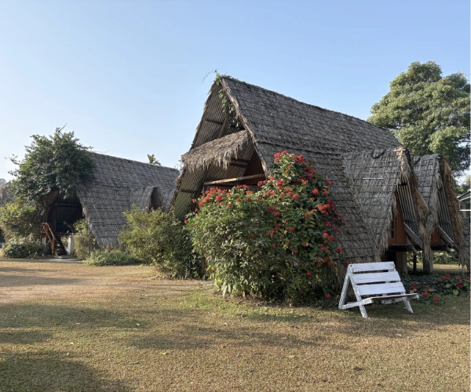

StaysAccommodation
As much as possible, we keep accommodation local for both authenticity and sustainability. Instead of large hotel chains, our first preference is smaller, locally owned establishments. The further we travel from the usual tourist places, the fewer choices there may be, but we ensure clean, hygienic accommodation with character.